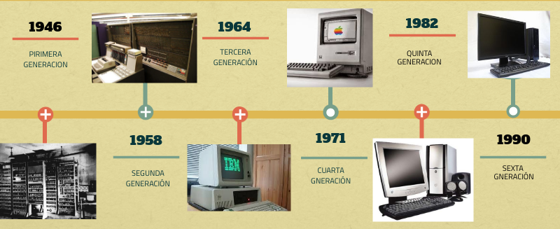

Historia de las computadoras

Una computadora es una máquina electrónica diseñada para procesar y manipular datos de acuerdo con un conjunto de instrucciones programadas. Estas instrucciones son ejecutadas por la computadora para realizar una variedad de tareas, como cálculos matemáticos, procesamiento de información, almacenamiento de datos, generación de gráficos y mucho más. Las computadoras están compuestas por componentes físicos como la unidad central de procesamiento (CPU), la memoria, el almacenamiento y dispositivos de entrada/salida, y funcionan en base a principios de electrónica y lógica digital. Han evolucionado a lo largo del tiempo y se han vuelto esenciales en muchas áreas de la vida moderna.
Comunicación: Las computadoras permiten la comunicación instantánea a través de Internet y otras redes. Correo electrónico, redes sociales, videollamadas y chats en línea son posibles gracias a ellas.
Procesamiento de información: Las computadoras tienen una capacidad excepcional para procesar grandes cantidades de información de manera rápida y eficiente. Esto es fundamental en campos como la investigación científica, el análisis de datos, la simulación de procesos y mucho más.
Almacenamiento de datos: Las computadoras pueden almacenar grandes volúmenes de datos en formatos digitales. Esto es esencial para mantener registros precisos y acceder a información de manera rápida.
Automatización: Las computadoras han revolucionado la automatización de procesos en diversas industrias. Desde la fabricación hasta la logística y la gestión de inventarios, las computadoras han mejorado la eficiencia y la precisión.
Educación: Las computadoras son herramientas valiosas en la educación. Proporcionan acceso a una amplia gama de recursos educativos en línea y permiten a los estudiantes practicar habilidades importantes, como la programación y la resolución de problemas.
Entretenimiento: Las computadoras ofrecen una amplia variedad de entretenimiento, desde videojuegos y películas hasta música y medios interactivos.
Innovación: La investigación y el desarrollo en campos como la inteligencia artificial, la biotecnología, la ciencia de materiales y muchos otros se basan en gran medida en el poder de cálculo y la capacidad de procesamiento de las computadoras.
Negocios y economía: Las computadoras son fundamentales en la administración de empresas, el comercio electrónico, la contabilidad, la gestión de recursos humanos y otras actividades empresariales esenciales.
Investigación científica: La modelización y simulación computacional son esenciales en muchas áreas científicas, desde la física y la química hasta la biología y la astronomía.